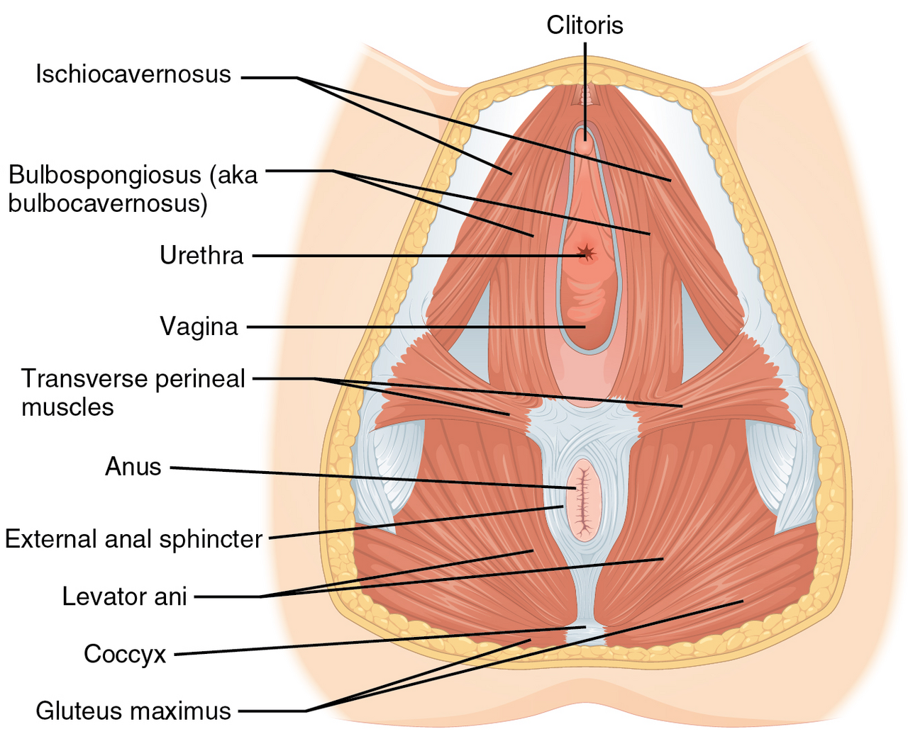

Đau có thể liên quan khô, kích ứng, nhiễm trùng, sàn chậu hoặc bệnh vùng chậu. Vị trí đau và thời điểm xuất hiện giúp định hướng nhưng không đủ để tự chẩn đoán. Cố tiếp tục khi đau có thể làm trải nghiệm khó chịu hơn.
Tình huống minh họa: Đau sâu và đau ở cửa âm đạo có thể cần hướng đánh giá khác nhau. Mô tả vị trí, thời điểm và hoạt động gây đau hữu ích hơn cố chịu hoặc tự kết luận thiếu hormone.
Sàn chậu cần sức mạnh, thả lỏng và phối hợp
Sàn chậu là một nhóm cơ, không phải một nút bấm đơn lẻ. Nhóm cơ này góp phần nâng đỡ và kiểm soát hoạt động vùng chậu, phối hợp với hô hấp, thành bụng và các hoạt động thường ngày. Chức năng có thể bị ảnh hưởng bởi yếu cơ, căng quá mức, đau hoặc phối hợp chưa phù hợp; những tình trạng này không được xử lý giống nhau.

Vì vậy, “có triệu chứng thì siết nhiều hơn” là cách suy luận dễ sai. Với người cần tăng sức mạnh, chương trình phù hợp chú ý cả chất lượng co và giai đoạn nghỉ. Với người có đau hoặc căng, khả năng thả và cảm giác an toàn có thể cần được giải quyết trước. Một người cũng có thể có nhiều vấn đề cùng lúc.
Khi thử nhận biết cơ, hãy giữ hơi thở tự nhiên và tránh biến động tác thành gồng toàn thân. Đừng dùng việc ngắt dòng tiểu thường xuyên như bài tập. Nếu không chắc đang làm đúng, hoặc triệu chứng tăng sau tập, một đánh giá chuyên môn có thể tiết kiệm thời gian hơn việc tăng tiếp số lần trên app. Tiến bộ nên được đánh giá bằng chức năng và triệu chứng, không chỉ chuỗi ngày hoàn thành.
“Cơ PC”, cơ hành hang và cơ ngồi hang không phải tên của cùng một cơ
Những nội dung Kegel thường dùng tên “PC” cho cả vùng, nhưng cơ mu–cụt là một phần trong nhóm nâng hậu môn. Các cơ nông như cơ hành hang và cơ ngồi hang là những cấu trúc khác, liên quan hoạt động vùng đáy chậu. Có phối hợp giữa nhiều cơ không có nghĩa người dùng cần hoặc có thể cô lập từng cấu trúc hoàn toàn khi tự tập.
Vì vậy, tên giải phẫu giúp định hướng, không thay kiểm tra chức năng. Người có triệu chứng có thể cần đánh giá sức co, khả năng thả, đau và phối hợp. Bài tập không chỉ là làm một “động cơ” lớn hơn: cùng một mức siết có thể phù hợp với người này và làm người khác khó chịu hơn. Đây là lý do bản hướng dẫn nên mô tả mục đích và phản ứng cần theo dõi thay vì chỉ yêu cầu siết tối đa. 3 4 5 6 7
Hệ vi sinh, môi trường âm đạo và giới hạn của bảng màu
Môi trường âm đạo có vi sinh vật và cơ chế bảo vệ tự nhiên; thành phần có thể thay đổi theo giai đoạn sống và nhiều yếu tố khác. Lactobacillus thường được nhắc tới vì vai trò tạo môi trường acid, nhưng không nên hiểu một mô hình hệ vi sinh duy nhất là tiêu chuẩn sức khỏe cho mọi người. Đặc biệt, thời điểm sau sinh, mãn kinh và thuốc có thể thay đổi bối cảnh.
Dịch tiết, mùi, ngứa và đau cung cấp các manh mối khác nhau. Một hình ảnh dịch đặc không đủ kết luận nấm, cũng như pH tăng không tự xác định chính xác một loại nhiễm trùng. Chọn thuốc từ bảng màu có thể bỏ sót nguyên nhân khác hoặc làm chậm kiểm tra khi triệu chứng kéo dài.
Chăm sóc thường ngày nên tập trung vào sự thoải mái và tránh kích ứng: làm sạch phần ngoài nhẹ nhàng, không thụt rửa để cố khử hết vi sinh vật, và ghi nhận những thay đổi rõ so với nền của mình. Nếu có dấu hiệu mới, thông tin về sản phẩm mới dùng, thuốc, kỳ kinh và nguy cơ phơi nhiễm có thể giúp buổi khám hiệu quả hơn. Mục tiêu không phải đạt một mùi hay một con số pH được quảng cáo là hoàn hảo. 2 1
Ham muốn, kích thích và sự đồng thuận là ba thông tin khác nhau
Ham muốn là trải nghiệm muốn gần gũi, còn kích thích cơ thể có thể gồm nhiều phản ứng tự động. Hai quá trình thường liên quan nhưng không luôn trùng nhau; sự đồng thuận lại là lựa chọn tự nguyện có thể thay đổi. Không thể dùng cương, tiết dịch hoặc việc đã đồng ý trước để kết luận hiện tại một người muốn tiếp tục.
Ham muốn chịu ảnh hưởng của sức khỏe, thuốc, trải nghiệm, stress và bối cảnh quan hệ. Những khái niệm như ham muốn tự phát, ham muốn đáp ứng hoặc mô hình kích thích–ức chế giúp mô tả sự đa dạng, không phải những kiểu người cố định. “Đáp ứng” cũng không có nghĩa cần bắt đầu điều không muốn để rồi buộc bản thân phải thích.
Khi hai người khác mức mong muốn, cần xác định điều làm mỗi người thoải mái và điều gây khó chịu. Mục tiêu không nhất thiết là khớp một tần suất chuẩn, vì không có chuẩn chung như vậy. Nếu thay đổi đột ngột hoặc gây khổ sở, hãy xem cả thuốc, đau, bệnh và tâm lý thay vì tự chẩn đoán thiếu hormone. Một lựa chọn ít hoặc không hoạt động tình dục, tự nó, không phải bằng chứng có bệnh. 8 9 10
Bảng đối chiếu để đọc đúng thông tin
| Vấn đề có thể gặp | Cần đánh giá | Điều dễ hiểu sai |
|---|---|---|
| Yếu hoặc tổn thương cơ | Khả năng co và chức năng | Chỉ đếm số lần siết |
| Căng hoặc đau | Khả năng thả và nguồn đau | Mặc định cần siết mạnh hơn |
| Phối hợp chưa phù hợp | Hô hấp, cơ khác, hoạt động gây triệu chứng | Coi gồng toàn thân là co đúng cơ |
| Rối loạn cương hoặc đau khi quan hệ | Nhiều nguyên nhân cùng có thể góp phần | Coi sàn chậu là nguyên nhân duy nhất |
Ứng dụng thực tế: làm gì và đánh giá bằng cách nào?
Dừng hoạt động gây đau và trao đổi rõ với bạn tình. Có thể thử chất bôi trơn phù hợp và hoạt động không đau nếu cả hai muốn. Ghi đau nông hay sâu, thời điểm và dấu hiệu đi kèm để trao đổi khi khám.
- Ghi điều ảnh hưởng cuộc sống. Thời điểm, đau, chảy máu, giấc ngủ hoặc mức khó chịu cụ thể giúp làm rõ câu hỏi.
- Ghi những thay đổi liên quan. Thuốc, tránh thai, lịch sống, khả năng mang thai và giai đoạn sau sinh có thể đổi cách diễn giải.
- Chọn hỗ trợ theo mục tiêu. Có thai, tránh thai, giảm đau và điều chỉnh tập là những mục tiêu khác nhau; không dùng một biểu đồ thay cho mọi quyết định.
- Chuẩn bị trao đổi khi cần. Mang diễn biến và điều đã thử, hỏi rõ lựa chọn cùng kế hoạch theo dõi thay vì tự mua một bộ xét nghiệm hoặc phác đồ bổ sung.
Khi nào nên tìm hỗ trợ?
Không mặc định đau là thiếu estrogen hoặc cơ yếu cần Kegel. Điều trị phụ thuộc nguyên nhân; chất bôi trơn hỗ trợ thoải mái nhưng không chữa mọi bệnh lý.
Đau thường xuyên hoặc nặng cần khám. Đau cấp kèm sốt, chảy máu hoặc nghi có thai cần đánh giá sớm.
Nguồn tham khảo và phạm vi hỗ trợ
-
ACOG — When Sex Is Painful — Professional patient guidance. Hỗ trợ: Nguyên nhân đau khi quan hệ và tiếp cận chăm sóc.
-
ACOG — Vulvovaginal Health — Professional patient guidance. Hỗ trợ: Vệ sinh vùng kín, dịch tiết, thay đổi niêm mạc và điều trị.
-
North Tees and Hartlepool NHS — Pelvic Floor Exercises for Men — Physiotherapy patient guidance. Hỗ trợ: Nhận biết, co và thả lỏng cơ sàn chậu nam.
-
Royal Berkshire NHS (2024) — Pelvic floor strengthening and relaxation exercises for men — Physiotherapy patient guidance. Hỗ trợ: Phối hợp tăng sức mạnh và thả lỏng; không kê bài siết cho tất cả.
-
NHS — Urinary incontinence: non-surgical treatment — Public health guidance. Hỗ trợ: Đánh giá sàn chậu và tập có giám sát cho rò tiểu.
-
Cambridge University Hospitals — Female pelvic floor muscle exercises — Physiotherapy patient guidance. Hỗ trợ: Cần thả lỏng đầy đủ giữa các lần co cơ.
-
Cohen et al. (2016) — The Role of Pelvic Floor Muscles in Male Sexual Dysfunction and Pelvic Pain — Clinical review. Hỗ trợ: Quan hệ giải phẫu, chức năng sàn chậu và tiếp cận sinh học–tâm lý–xã hội.
-
NHS — Low sex drive (loss of libido) — Public health guidance. Hỗ trợ: Nhiều yếu tố ảnh hưởng ham muốn và chăm sóc theo nguyên nhân.
-
Devon Sexual Health (NHS) — Relationships and intimacy — Sexual health service guidance. Hỗ trợ: Đồng thuận, thân mật và thủ dâm.
-
Mallory et al. (2019) — Couples' Sexual Communication and Dimensions of Sexual Function: A Meta-Analysis — Meta-analysis of associations. Hỗ trợ: Liên hệ giữa giao tiếp và chức năng tình dục; không chứng minh nhân quả.
Cập nhật nội dung và nguồn: 26/10/2026. Nội dung giáo dục; chưa có xác nhận duyệt bởi bác sĩ.